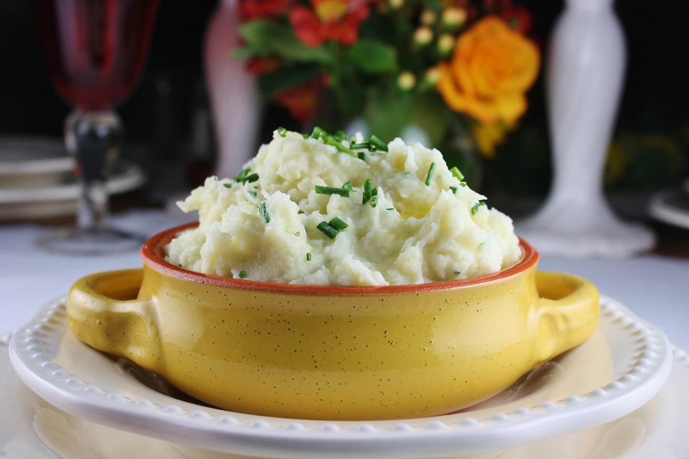

Mashed Potatoes

Description
It is the sweetness of the roasted garlic that makes these mashed
potatoes so delicious.
Ingredients
- 6 cloves garlic, peeled
- 1/4 cup olive oil
- 7 baking potatoes, peeled and cubed
- 1/2 cup milk
- 1/4 cup grated Parmesan cheese
- 2 tablespoons butter
- 1/2 teaspoon salt
- 1/4 teaspoon ground black pepper
Steps
- Preheat oven to 350 degrees F (175 degrees C).
-
Place garlic cloves in a small baking dish. Drizzle with olive
oil, cover, and bake 45 minutes, or until golden brown.
-
Bring a large pot of lightly salted water to boil. Add potatoes,
and cook until tender but firm. Drain, and transfer to a large
mixing bowl.
-
Place roasted garlic, milk, Parmesan cheese, and butter into the
bowl with the potatoes. Season with salt and pepper. Beat to
desired consistency with an electric mixer.
Roasted Garlic Parmesan Mashed Potatoes
by
Jackie
at
allrecipes.com